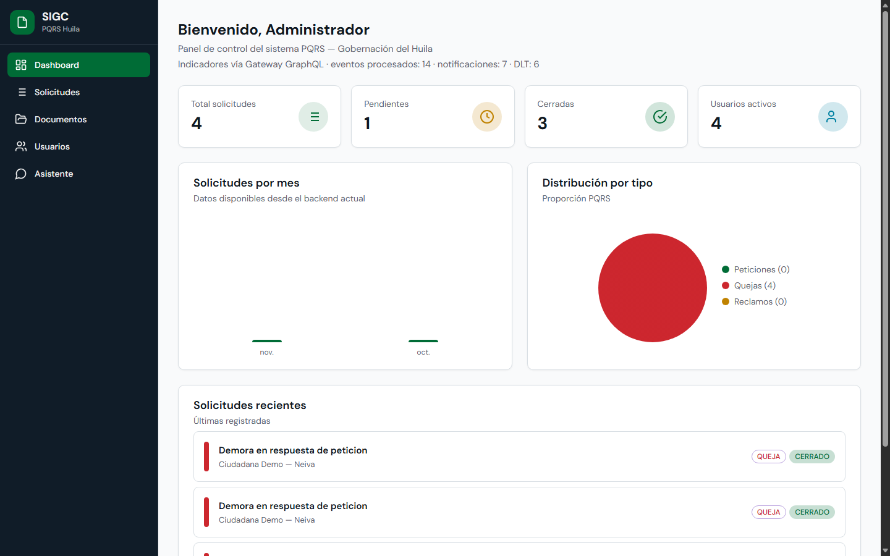
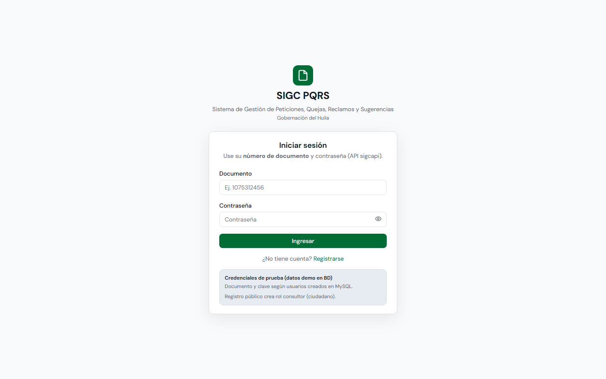
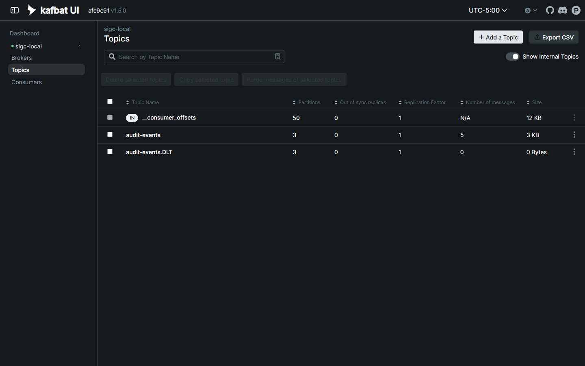
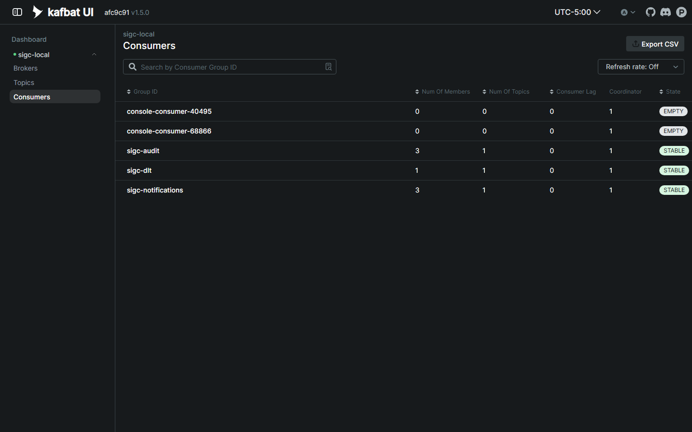
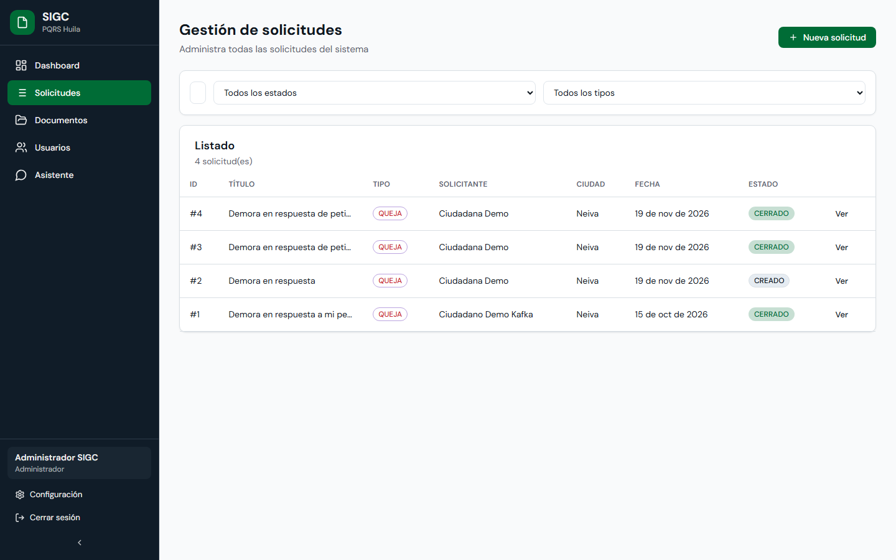
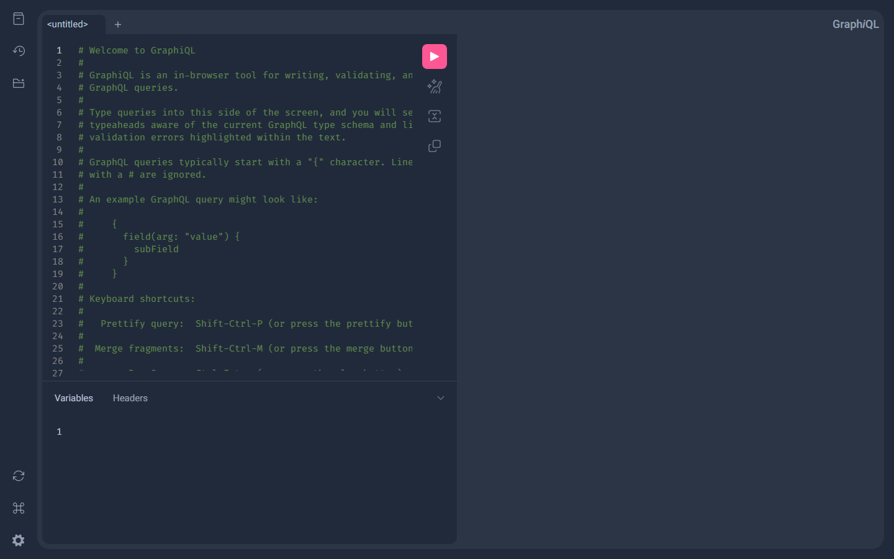

| FET FUNDACIÓN ESCUELA TECNOLÓGICA DE NEIVA JESÚS OVIEDO PÉREZ |
GESTIÓN DE INVESTIGACIÓN | CÓDIGO: FO-GI-10 |
| INFORME FINAL PROYECTO DE AULA | VIGENCIA: ENERO 31 DE 2024 |
| No | Nombre Estudiantes | Programa | Semestre | Jornada |
|---|---|---|---|---|
| 1 | Santiago Murcia Cangrejo | Ingeniería de Software | 9 | Día |
| 2 | Hallys Andrea Escobar Paloma | Ingeniería de Software | 9 | Día |
| 3 | ||||
| 4 |
SIGC: Sistema Inteligente de Gestión de PQR con arquitectura distribuida orientada a eventos (API REST, Kafka y Gateway GraphQL).
SIGC es un sistema para radicar, tramitar y auditar peticiones, quejas y reclamos (PQR) de acuerdo con la normativa colombiana. El proyecto evolucionó por entregas sucesivas: una API REST en Spring Boot 4 / Java 21 con persistencia en MariaDB y autenticación JWT; una integración orientada a eventos con Apache Kafka (patrón Transactional Outbox, consumidores idempotentes de auditoría y notificación, y un Dead Letter Topic); y, en el tercer periodo, un microservicio gateway GraphQL que es el punto de entrada para el cliente, valida el token y los roles, compone información de varios endpoints REST, aplica timeout, reintentos y circuit breaker, y almacena en Redis los indicadores del tablero. Todos los componentes (base de datos, Kafka, Kafka UI, Redis, API, gateway y frontend Angular) se levantan con Docker Compose. La solución incluye contratos (OpenAPI, AsyncAPI, JSON Schema y schema GraphQL), pruebas unitarias, de integración y de contrato, y un identificador de correlación que permite seguir una operación desde el gateway hasta los consumidores de Kafka. El informe distingue lo implementado, lo parcial y lo pendiente.
Palabras claves: gestión de PQR, arquitectura orientada a eventos, Apache Kafka, GraphQL, seguridad de APIs, resiliencia.
SIGC is a system for filing, processing and auditing citizen petitions, complaints and claims (PQR) in accordance with Colombian regulations. The project evolved through incremental deliveries: a REST API built with Spring Boot 4 / Java 21, MariaDB persistence and JWT authentication; an event-driven integration with Apache Kafka (Transactional Outbox pattern, idempotent audit and notification consumers, and a Dead Letter Topic); and, in the third period, a GraphQL gateway microservice that acts as the client entry point, validates the token and roles, composes data from several REST endpoints, applies timeout, retry and circuit breaker policies, and caches dashboard indicators in Redis. All components (database, Kafka, Kafka UI, Redis, API, gateway and Angular frontend) run with Docker Compose. The solution includes contracts (OpenAPI, AsyncAPI, JSON Schema and GraphQL schema), unit, integration and contract tests, and a correlation identifier that traces an operation from the gateway to the Kafka consumers. The report distinguishes implemented, partial and pending features.
Keywords: complaint management, event-driven architecture, Apache Kafka, GraphQL, API security, resilience.
Este informe presenta el resultado final del proyecto de aula de Programación Avanzada. El alcance aprobado es un MVP backend distribuido para la gestión de PQR: el ciudadano se registra, inicia sesión y radica una solicitud con sus soportes; el administrador consulta, filtra y cambia el estado de las solicitudes; cada cambio queda auditado y genera una notificación al ciudadano sin bloquear la respuesta HTTP; y el tablero administrativo consulta indicadores a través de un gateway GraphQL.
Los objetivos se abordaron con una metodología iterativa e incremental, en tres entregas alineadas con los periodos del curso: (1) contratos y API REST; (2) mensajería con Kafka; (3) gateway GraphQL, seguridad, pruebas, observabilidad, resiliencia y Docker Compose final. La aplicación práctica es doble: el sistema sirve como base para una oficina de atención al ciudadano y, en lo académico, permite demostrar de extremo a extremo los conceptos de arquitecturas distribuidas trabajados en el semestre.
Las entidades que reciben PQR deben responder dentro de plazos legales (Ley 1755 de 2015) y proteger los datos personales de los ciudadanos (Ley 1581 de 2012). En muchas organizaciones pequeñas el trámite se lleva en correos y hojas de cálculo: no hay trazabilidad de quién cambió el estado de una solicitud ni cuándo, los vencimientos se detectan tarde y la notificación al ciudadano depende de que alguien la envíe manualmente.
La primera versión del backend de SIGC resolvía el registro y la consulta, pero tenía limitaciones técnicas: el historial y el correo se ejecutaban dentro de la petición HTTP (si el servidor de correo fallaba, fallaba el cambio de estado), el cliente debía hacer varias llamadas REST para armar el tablero, no existía un punto de entrada único con control de acceso por rol, y no había forma de seguir una operación a través de varios componentes ni de tolerar la caída parcial de un servicio. Estos problemas son los que el proyecto estudia y resuelve con una arquitectura distribuida.
Para los estudiantes, el proyecto integra en un solo sistema funcional los temas de la asignatura (REST, Kafka, GraphQL, seguridad, pruebas, observabilidad, resiliencia y contenedores), con decisiones justificadas y no solo como ejercicios aislados. Para el docente tutor, ofrece un artefacto ejecutable y verificable (README, Docker Compose, pruebas automatizadas y evidencias) sobre el cual evaluar competencias técnicas. Para la sociedad, un sistema de PQR con trazabilidad completa, notificación oportuna y protección de datos personales contribuye a que el derecho de petición se ejerza de forma efectiva y a que las entidades cumplan los plazos y obligaciones legales.
Desarrollar un MVP de sistema de gestión de PQR con arquitectura distribuida —API REST, mensajería con Apache Kafka y gateway GraphQL— que garantice la trazabilidad de cada solicitud, la notificación asíncrona al ciudadano y el acceso seguro y resiliente desde el cliente, ejecutable de forma reproducible con Docker Compose.
Las arquitecturas de microservicios y orientadas a eventos se han consolidado como alternativa a los monolitos cuando se necesita desacoplar responsabilidades y tolerar fallos parciales (Newman, 2021; Richardson, 2018). Kreps et al. (2011) presentaron Kafka como un registro distribuido de mensajes de alto rendimiento, hoy estándar para integrar sistemas por eventos. GraphQL fue publicado por Facebook en 2015 como lenguaje de consulta orientado al cliente y su especificación es mantenida por la GraphQL Foundation (GraphQL Foundation, 2021). En el contexto colombiano, la gestión de PQR está regulada por el CPACA y la Ley 1755 de 2015, y muchas entidades usan sistemas de ventanilla única; este proyecto toma esas necesidades como referencia funcional.
requestId conserva el orden de los eventos de una misma PQR. La entrega es al menos una vez, por lo que los consumidores deben ser idempotentes.El proyecto se desarrolló en la Fundación Escuela Tecnológica de Neiva Jesús Oviedo Pérez, en la asignatura Programación Avanzada (noveno semestre de Ingeniería de Software, jornada día, 2026-2), por un equipo de dos integrantes. Fortalezas: uso exclusivo de herramientas libres, entorno reproducible con Docker y entregas incrementales con retroalimentación. Limitaciones: equipo reducido, tiempo de un semestre, ejecución en equipos personales (un solo broker Kafka, sin despliegue en la nube) y ausencia de una entidad real que valide el sistema en producción; los datos usados son ficticios.
Se aplicó una metodología iterativa e incremental con cadencia semanal de tipo Scrum: cada semana se tomaba el tema de clase, se planeaban las tareas, se implementaban y se verificaban con pruebas y evidencias, y se revisaban los resultados con la retroalimentación del docente.
| Iteración | Actividades y productos |
|---|---|
| Periodo 1 — Contratos y API REST | Requisitos, modelo de datos, contratos OpenAPI y schema GraphQL inicial; API REST en Spring Boot con MariaDB, JWT, validaciones, paginación, filtros, carga de documentos y manejo centralizado de errores. |
| Periodo 2 — Kafka (semana 11) | Tópicos audit-events y audit-events.DLT; productor con Transactional Outbox; consumidores sigc-audit, sigc-notifications y sigc-dlt; idempotencia; reintentos con backoff; contrato AsyncAPI y JSON Schema; prueba de integración con Kafka embebido. |
| Periodo 3 — Semanas 12 a 15 | Semana 12: gateway GraphQL (schema, queries, mutations, resolvers, integración REST). Semana 13: seguridad (JWT con roles, autorización por operación, CORS explícito, secretos en .env). Semana 14: pruebas unitarias, de integración y de contrato; logs con identificador de correlación. Semana 15: timeout, retry, circuit breaker, Redis y Docker Compose final. |
| Semana 16 | Estabilización del MVP, documentación (README, manual técnico, contratos), evidencias y este informe. |
Técnicas de verificación: pruebas automatizadas (JUnit 5, Mockito, Spring Test, Kafka embebido), pruebas manuales con curl/Postman y GraphiQL, revisión de logs y de Kafka UI, y consultas directas a la base de datos.
Orientación del docente tutor, diapositivas y lineamientos de la asignatura, y el formato FO-GI-10 de la institución. No se requirieron avales, convenios ni autorizaciones de entidades externas, y no se usaron datos reales de ciudadanos.
No hubo desembolsos: todo el software es libre y la ejecución es local. El valor del trabajo y de los equipos se presenta como estimación en la sección 12.
Figura 1. Componentes y comunicación de la solución (detalle en README.md y docs/).
Los resultados se presentan según los objetivos específicos. Cada afirmación está respaldada por una prueba automatizada, una salida de comando guardada en evidencias/ o una captura (Anexos). Se distinguen resultados medidos (ejecutados en el entorno Docker Compose o en la suite de pruebas), simulados (fallos provocados a propósito o correo en modo simulado) y trabajo futuro.
La API expone autenticación (/auth/login, /auth/register), radicación con documentos (POST /requests/save), consultas paginadas con filtros (/requests/all, /requests/my), cambio de estado (PUT /requests/{id}/status), historial (/requests/{id}/history) y administración de usuarios, reglas, estándares y sesiones. Los errores siguen un formato uniforme {exito, mensaje, data} con códigos 400/401/403/404/409/413/500. El registro público siempre crea usuarios CONSULTOR y el primer administrador se crea con variables de entorno.
Al radicar o cambiar el estado de una PQR, la API responde sin esperar a Kafka; el evento queda en outbox_events y el relay lo publica con acks=all y productor idempotente. Los consumidores sigc-audit y sigc-notifications producen efectos verificables en request_history y notifications. Un evento reenviado se ignora (idempotencia por processed_events con restricción única) y los mensajes inválidos terminan en audit-events.DLT y en failed_events.
me, misSolicitudes, solicitudes, solicitud (con el campo historial resuelto con una segunda llamada REST), resumenIndicadores y volumenPorEstado; mutations login, radicarSolicitud y cambiarEstadoSolicitud. Contrato en contracts/schema.graphql.@PreAuthorize por operación (ADMIN para consultas administrativas y cambio de estado) y propaga a la API solo el encabezado Authorization y el X-Correlation-Id; la API vuelve a validar el token (no se asume que toda llamada interna es legítima). CORS se configura con orígenes explícitos por variable de entorno.UNAVAILABLE; los indicadores usan el último valor almacenado en Redis marcado como desactualizado cuando la API no responde.resumenIndicadores y volumenPorEstado se guardan en Redis con expiración corta, porque son datos de lectura frecuente del tablero. Los datos propios de cada usuario no se almacenan en caché.X-Correlation-Id, lo registra en cada línea de log, lo envía a la API y esta lo propaga como header del evento en Kafka hasta los consumidores. Endpoints /actuator/health para el monitoreo de los servicios.| Módulo | Comando | Total | Fallos | Errores | Evidencia |
|---|---|---|---|---|---|
| api.documental | ./mvnw test | 136 | 0 | 0 | evidencias/pruebas/resumen_surefire.txt |
| gateway | ./mvnw test | 24 | 0 | 0 | ídem |
| # | Caso | Resultado esperado | Resultado obtenido | Estado | Tipo | Evidencia |
|---|---|---|---|---|---|---|
| E01 | Levantar la arquitectura con docker compose up --build -d | 8 servicios; db/kafka/redis/api *healthy*; kafka-init termina | 7 servicios en ejecución + kafka-init exited (0) | ✅ Aprobado | Medido | evidencias/final/00_servicios.txt |
| E02 | Salud de API y gateway | UP; gateway muestra circuit breaker CLOSED y Redis UP | UP, circuitBreaker: CLOSED, redis: UP | ✅ | Medido | 01_salud.txt |
| E03 | Query protegida sin token | Error UNAUTHORIZED | codigo: UNAUTHORIZED | ✅ | Medido | 02_sin_token.txt |
| E04 | login admin vía gateway | Token + roles [ADMIN] | Token emitido, roles: ["ADMIN"] | ✅ | Medido | 03_login_admin.txt |
| E05 | login con clave incorrecta | UNAUTHORIZED | Credenciales inválidas. UNAUTHORIZED | ✅ | Medido | 04_login_invalido.txt |
| E06 | Registro de ciudadano (REST) | HTTP 201, rol CONSULTOR | 201 Usuario registrado exitosamente. | ✅ | Medido | 05_consultor.txt |
| E07 | CONSULTOR consulta operación ADMIN / su identidad | FORBIDDEN / me OK | FORBIDDEN; me.roles = [CONSULTOR] | ✅ | Medido | 06_consultor_denegado.txt |
| E08 | Preflight CORS desde origen permitido y no permitido | 200 con Access-Control-Allow-Origin / 403 | 200 Allow-Origin: http://localhost:4300 / 403 Invalid CORS request | ✅ | Medido | 07_cors.txt |
| E09 | radicarSolicitud (CONSULTOR) con adjunto | PQR en estado CREADO | PQR creada, estado: CREADO | ✅ | Medido | 08_radicar.txt |
| E10 | cambiarEstadoSolicitud (ADMIN) a CERRADO | estado: CERRADO | estado: CERRADO | ✅ | Medido | 09_cambiar_estado.txt |
| E11 | solicitud(id) { historial } (composición de 2 llamadas REST) | Historial con CREADO y CREADO→CERRADO escrito por sigc-audit; correoEnviado: true | 2 eventos en el historial con eventId; correoEnviado: true; sin datos sensibles (sin password) | ✅ | Medido | 10_consulta_compuesta.txt |
| E12 | solicitudes con filtro y paginación | Solo campos pedidos | totalElementos, contenido{id titulo estado} | ✅ | Medido | 11_listado.txt |
| E13 | misSolicitudes (CONSULTOR) | Solo sus PQR | 1 PQR propia | ✅ | Medido | 12_mis_solicitudes.txt |
| E14 | Mensajes en audit-events | 2 eventos con clave = id de la PQR y header x-correlation-id | REQUEST_CREATED y REQUEST_STATUS_CHANGED, misma partición, x-correlation-id presente | ✅ | Medido | 13_kafka_mensajes.txt |
| E15 | Efecto de sigc-notifications | Notificación registrada | Notificación con estado SIMULATED | ✅ | Simulado (correo) | 14_notificacion.txt |
| E16 | resumenIndicadores dos veces + volumenPorEstado | 1.ª calcula, 2.ª desde Redis (mismo generadoEn, más rápida); claves con TTL ≈ 30 s | Mismo generadoEn; 1.ª ≈ 1,3 s, 2.ª ≈ 0,05 s; 3 claves sigc:gateway:*, TTL 28 s | ✅ | Medido | 15_indicadores_redis.txt |
| E17 | Trazabilidad por correlation ID | Mismo correlationId en gateway, API, productor y ambos consumidores | Logs [GATEWAY], [API-CLIENT], [OUTBOX], [KAFKA-PRODUCER], [AUDITORIA], [NOTIFICACIONES] con el mismo id | ✅ | Medido | 16_trazabilidad.txt |
| E18 | API detenida: timeout + retry | Error controlado UNAVAILABLE tras reintentos | 1.er intento ≈ 7 s (3 intentos) → UNAVAILABLE | ✅ | Simulado (fallo provocado) | 17_resiliencia.txt |
| E19 | API detenida: circuit breaker | Tras ≥ 5 fallos se abre y responde rápido | Estado OPEN; intentos 3–6 en ≈ 0,02–0,04 s sin llamar a la API | ✅ | Simulado | 17_resiliencia.txt |
| E20 | API detenida: respaldo de indicadores | Último valor con desactualizado: true | desactualizado: true | ✅ | Simulado | 17_resiliencia.txt |
| E21 | Recuperación de la API | El gateway vuelve a responder (HALF_OPEN → CLOSED) | solicitudes y resumenIndicadores OK, desactualizado: false | ✅ | Medido | 18_recuperacion.txt |
| E22 | Idempotencia ante evento duplicado | Se ignora el duplicado | Ver Entrega 2 | ✅ | Simulado | evidencias/salidas/10_duplicado.txt, 11_idempotencia.txt |
| E23 | Mensajes inválidos → DLT | Van a audit-events.DLT y se guardan en failed_events | Ver Entrega 2 | ✅ | Simulado | evidencias/salidas/12–14_*.txt |
| E24 | Dashboard del frontend con indicadores del gateway | Tarjetas con datos de resumenIndicadores | Ver capturas | ✅ | Medido | evidencias/capturas/ |
| E25 | Verificación desde el ZIP en carpeta nueva con volúmenes vacíos (arranque en frío) | Toda la arquitectura levanta siguiendo solo el README; la primera radicación responde OK | La arquitectura levantó; login, consulta compuesta con historial e indicadores funcionaron. La primera radicarSolicitud tras el arranque superó el timeout de 5 s: el cliente recibió UNAVAILABLE aunque la PQR sí se creó y Kafka la auditó; al no reintentarse la mutation no hubo duplicado | ⚠️ Parcial | Medido | docs/pruebas.md, sección 3 |
Las salidas completas de cada caso están en evidencias/final/ del repositorio y se presentan comentadas en el documento G3 SIGC Evidencias de funcionamiento.pdf (Actividad 3.1, Anexo 13); por eso no se duplican aquí. Tipo de resultado: Medido = ejecutado contra el sistema real; Simulado = fallo provocado a propósito o efecto externo no real (correo en modo SIMULATED); Futuro = no implementado (pruebas de carga, E2E automatizadas del frontend, SMTP real, Kafka multi-broker).
Hallazgo de la verificación desde cero (E25). En arranque en frío la primera escritura tardó más que el timeout de lectura del gateway (5 s): el cliente recibió UNAVAILABLE aunque la API completó la radicación. Confirma en la práctica que un timeout demasiado corto también genera fallos y que no reintentar las mutations evitó un duplicado. Mitigaciones propuestas (no implementadas): timeout mayor para mutations, clave de idempotencia en la radicación y precalentamiento de la API.

resumenIndicadores del gateway (caché Redis). Demuestra la integración frontend → gateway → API. Las demás tarjetas, la gráfica por tipo y las solicitudes recientes se cargan desde la API REST.

audit-events (3 particiones) y audit-events.DLT creados por kafka-init.
sigc-audit, sigc-notifications y sigc-dlt en estado STABLE con lag 0 (todos los eventos procesados). El tópico audit-events.DLT aparece con 0 mensajes porque los 6 mensajes fallidos son de las pruebas del 15/10/2026 y su retención de 30 días ya venció; quedan registrados en la tabla failed_events, que es lo que cuenta el indicador mensajesDlt.

| Funcionalidad | Estado | Observación / limitación |
|---|---|---|
| API REST (auth JWT, radicación, consultas, estado, historial, administración) | Implementado | Contrato en contracts/openapi.yaml. |
| Kafka: outbox, consumidores de auditoría y notificación, idempotencia, DLT | Implementado | Un solo broker con factor de replicación 1 (entorno de desarrollo). |
| Gateway GraphQL (queries, mutations, resolvers, composición) | Implementado | El gateway no tiene base de datos propia; delega en la API REST. |
| Seguridad: JWT con roles, autorización por operación, CORS, secretos en .env | Implementado | Clave HMAC compartida entre API y gateway; sin rotación de claves ni refresh token. |
| Resiliencia: timeout, retry, circuit breaker | Implementado | Aplicado a las llamadas gateway → API. |
| Redis como caché de indicadores | Implementado | Expiración corta; los datos pueden tener hasta esa antigüedad. |
| Identificador de correlación de extremo a extremo | Implementado | Correlación por logs; sin trazas distribuidas (OpenTelemetry). |
| Docker Compose (db, kafka, kafka-init, kafka-ui, redis, api, gateway, frontend) | Implementado | Ejecución local; sin despliegue en la nube. |
| Frontend Angular consumiendo el gateway | Parcial | Solo los indicadores del tablero usan GraphQL; las demás pantallas usan la API REST directamente. |
| Notificación por correo | Parcial | Por defecto en modo simulado (MAIL_ENABLED=false); con credenciales SMTP envía correos reales. Entrega al menos una vez. |
| Métricas | Parcial | Actuator (health/metrics); sin Prometheus ni Grafana. |
| SSE / WebSocket | No implementado (decisión) | El caso de uso no requiere tiempo real; el tablero se actualiza al consultar. Se deja como trabajo futuro. |
GET /documents/my (autoservicio de documentos) | Pendiente | Definido en el contrato como propuesta. |
| Alta disponibilidad (varios brokers, varias réplicas de la API) | Pendiente | El relay del outbox supone una sola instancia de la API. |
Se cumplió el objetivo general: SIGC funciona de extremo a extremo como un sistema distribuido que se levanta con un solo comando de Docker Compose. Frente a los objetivos específicos: (1) la API REST concentra la lógica de negocio y la persistencia; (2) Kafka desacopla la auditoría y la notificación de la petición HTTP, de modo que un fallo del correo ya no impide cambiar el estado de una PQR, y la idempotencia y el DLT evitan efectos duplicados y ciclos infinitos de reprocesamiento; (3) el gateway GraphQL ofrece un punto de entrada único y tipado, aplica la seguridad y la resiliencia en la frontera del sistema y, con el identificador de correlación, permite seguir una operación a través de todos los componentes.
Entre los aprendizajes se destacan: publicar eventos solo después de confirmar el cambio (outbox), no asumir entrega exactamente una vez, no reintentar operaciones no idempotentes, no duplicar en el gateway la lógica que ya existe en REST y aplicar cada componente adicional (Redis, tiempo real) solo cuando responde a una necesidad concreta.
Limitaciones: entorno de un solo broker y una instancia de la API; correo simulado por defecto; frontend integrado con el gateway solo en el tablero; observabilidad basada en logs y health checks sin trazas distribuidas; datos ficticios y sin validación en una entidad real. En una segunda versión se propone: clúster de Kafka con replicación, relay del outbox con SKIP LOCKED o CDC (Debezium), OpenTelemetry con Prometheus y Grafana, migración completa del frontend al gateway, gestión de secretos con un vault y despliegue en la nube con CI/CD.
Apache Software Foundation. (2024). Apache Kafka documentation (versión 3.9). https://kafka.apache.org/documentation/
Congreso de la República de Colombia. (2011). Ley 1437 de 2011, por la cual se expide el Código de Procedimiento Administrativo y de lo Contencioso Administrativo. Diario Oficial 47.956.
Congreso de la República de Colombia. (2012). Ley Estatutaria 1581 de 2012, por la cual se dictan disposiciones generales para la protección de datos personales. Diario Oficial 48.587.
Congreso de la República de Colombia. (2015). Ley Estatutaria 1755 de 2015, por medio de la cual se regula el derecho fundamental de petición. Diario Oficial 49.559.
GraphQL Foundation. (2021). GraphQL specification (October 2021 edition). https://spec.graphql.org/October2021/
Jones, M., Bradley, J., & Sakimura, N. (2015). JSON Web Token (JWT) (RFC 7519). Internet Engineering Task Force. https://doi.org/10.17487/RFC7519
Kreps, J., Narkhede, N., & Rao, J. (2011). Kafka: A distributed messaging system for log processing. En Proceedings of the NetDB Workshop.
Ministerio de Comercio, Industria y Turismo. (2013). Decreto 1377 de 2013, por el cual se reglamenta parcialmente la Ley 1581 de 2012.
Newman, S. (2021). Building microservices: Designing fine-grained systems (2.ª ed.). O'Reilly Media.
Nygard, M. T. (2018). Release it!: Design and deploy production-ready software (2.ª ed.). Pragmatic Bookshelf.
Redis Ltd. (2024). Redis documentation. https://redis.io/docs/
Resilience4j. (2024). Resilience4j user guide. https://resilience4j.readme.io/docs
Richardson, C. (2018). Microservices patterns: With examples in Java. Manning Publications.
VMware Tanzu / Broadcom. (2025). Spring Boot reference documentation. https://docs.spring.io/spring-boot/
VMware Tanzu / Broadcom. (2025). Spring for GraphQL reference documentation. https://docs.spring.io/spring-graphql/reference/
VMware Tanzu / Broadcom. (2025). Spring for Apache Kafka reference. https://docs.spring.io/spring-kafka/reference/
Criterio: los valores marcados como REAL corresponden a gastos efectivamente realizados (ninguno: todo el software es libre y la ejecución fue local). Los marcados como ESTIMADO valoran recursos propios para dimensionar el proyecto; no son desembolsos. Supuestos: tarifa de referencia de practicante/desarrollador junior de COP 25.000 por hora; 120 horas por integrante durante el semestre; depreciación de equipos proporcional a 4 meses de uso de un equipo de COP 3.000.000 con vida útil de 36 meses.
| Rubros | Descripción | Unidad | Cantidad | Valor unitario (COP) | Total (COP) | Tipo |
|---|---|---|---|---|---|---|
| Capital humano | ||||||
| Desarrollo | Santiago Murcia Cangrejo: análisis, desarrollo, pruebas y documentación | Hora | 120 | 25.000 | 3.000.000 | ESTIMADO |
| Desarrollo | Hallys Andrea Escobar Paloma: análisis, desarrollo, pruebas y documentación | Hora | 120 | 25.000 | 3.000.000 | ESTIMADO |
| Maquinarias y equipos | ||||||
| Computadores | Equipos personales (depreciación de 4 meses) | Equipo | 2 | 333.333 | 666.666 | ESTIMADO |
| Materiales e insumos | ||||||
| Software | Java, Spring, Kafka, MariaDB, Redis, Angular, Docker, Git (licencias libres) | Licencia | — | 0 | 0 | REAL |
| Conectividad | Internet y energía de los hogares (proporción de uso) | Mes | 4 | 30.000 | 120.000 | ESTIMADO |
| Servicios técnicos | ||||||
| Hosting / nube | No se usó: ejecución local con Docker Compose | — | 0 | 0 | 0 | REAL |
| Repositorio | GitHub (plan gratuito) | — | 1 | 0 | 0 | REAL |
| Salidas de campo | ||||||
| No aplica | El proyecto no requirió salidas de campo | — | 0 | 0 | 0 | REAL |
| TOTAL | Gasto real: COP 0 · Valoración estimada del proyecto | 6.786.666 | ||||
Para no duplicar información, los anexos técnicos se encuentran en el repositorio y en el ZIP de la entrega (misma versión, etiqueta v3.0.0):
| Anexo | Ubicación |
|---|---|
| A. Instalación, ejecución, puertos, variables y limitaciones | README.md y .env.example |
| B. Arquitectura, responsabilidades y comunicación | README.md (sección Arquitectura), docs/estructura-proyecto.md, docs/kafka.md, gateway/README.md |
| C. Contratos (API, eventos, GraphQL) | contracts/openapi.yaml, contracts/asyncapi.yaml, contracts/events/request-event.schema.json, contracts/schema.graphql |
| D. Modelo de datos y script SQL | docs/modelo-datos.md, docs/modelo-datos.png, backend-actual/sigcapi.sql |
| E. Docker | docker-compose.yml, api.documental/Dockerfile, gateway/Dockerfile, Front-Angular-ProyectoAula8voSemestre-main/Dockerfile |
| F. Pruebas automatizadas | api.documental/src/test/ y gateway/src/test/ |
| G. Evidencias y scripts de demostración | evidencias/, scripts/, documento "G3 SIGC Evidencias de funcionamiento.pdf" |
| H. Colección Postman | docs/API_Documental.postman_collection.json |
| Integrante | Aporte |
|---|---|
| Santiago Murcia Cangrejo | Participó en el análisis, el diseño de la arquitectura, el desarrollo, las pruebas y la documentación de todos los componentes. [Completar por el equipo: detalle de aporte] |
| Hallys Andrea Escobar Paloma | Participó en el análisis, el diseño de la arquitectura, el desarrollo, las pruebas y la documentación de todos los componentes. [Completar por el equipo: detalle de aporte] |
Los campos de validación institucional (revisión, aprobación y firmas) corresponden al docente y se dejan para su diligenciamiento.